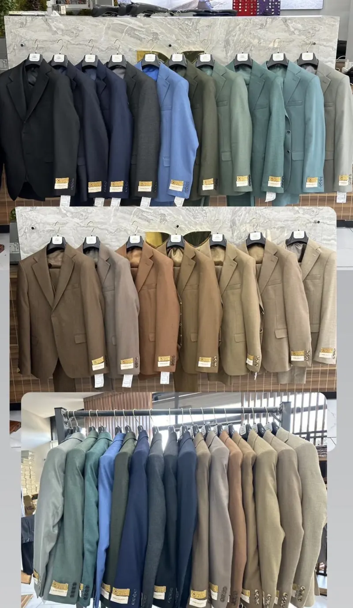
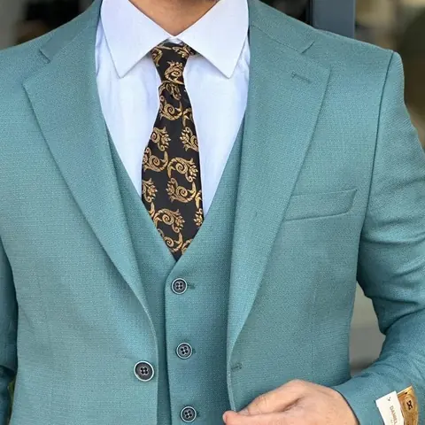
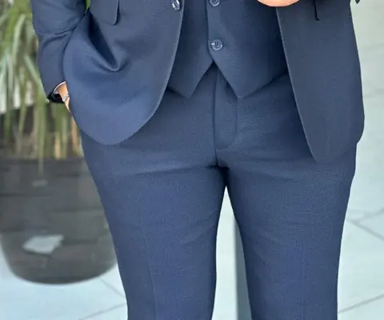
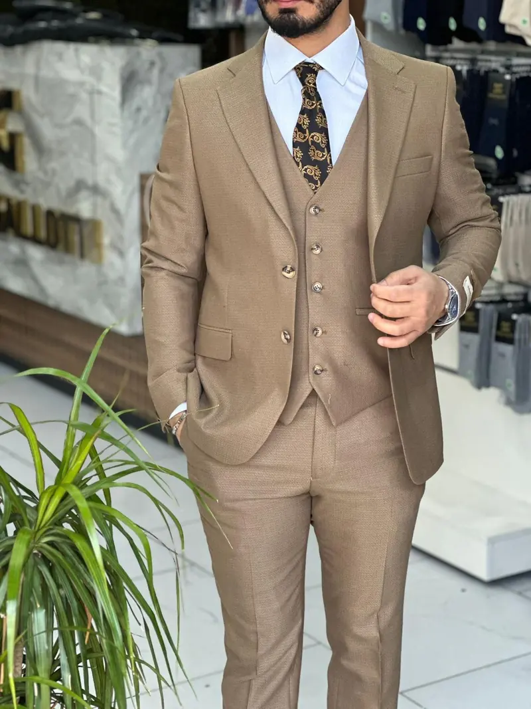

Bine ai venit
Magazin de haine bărbătești în centrul Focșaniului
La IANIS men's găsești haine pentru bărbați pentru orice moment: costume de ceremonie pentru nuntă sau botez, ținute business pentru birou și piese casual pentru zilele obișnuite. Totul într-un singur loc, pe Strada Mare a Unirii, unde poți proba în liniște și alege combinația care ți se potrivește.
Ce găsești la noi
Colecții pentru bărbați

Costume bărbătești
Costume în trei piese pentru nuntă, botez, cununie sau birou — în peste zece nuanțe, de la clasic la modern.
Vezi costumele
Cămăși
Vezi cămășile
Pantaloni & blugi
Vezi pantaloniiGeci & paltoane
Pentru sezonul rece, peste costum sau casual.
DetaliiÎncălțăminte
Pantofi eleganți și sneakers pentru ținuta completă.
Detalii
Despre noi
Eleganță pentru fiecare zi, în Focșani
IANIS men's este un magazin de îmbrăcăminte și încălțăminte bărbătească aflat pe Strada Mare a Unirii nr. 4, în centrul Focșaniului. Aici găsești ținuta completă — de la costumul pentru un eveniment important până la hainele pe care le porți zilnic.
- Costume în trei piese, în multe culori
- Cămăși, pantaloni, geci, bluze și încălțăminte
- Probezi totul în magazin, înainte să cumperi
- Raport calitate-preț apreciat în recenziile Google
Părerea clienților
Apreciați de clienții din Focșani
Rating pe Google
Recenzii pe Google
Zile pe săptămână deschis
Clienții ne apreciază în recenziile de pe Google pentru raportul calitate-preț și pentru seriozitate. Ai cumpărat deja de la noi? Spune-ne cum a fost.
Galerie
Costume din magazinul nostru
Unde ne găsești
Vizitează-ne în centrul Focșaniului
Adresă
Strada Mare a Unirii nr. 4Focșani 620100, jud. Vrancea
Telefon
Program
Luni – Vineri: 10:00 – 18:00
Sâmbătă: 10:00 – 13:30
Duminică: închis
Ai un eveniment în curând?
Găsește ținuta potrivită la IANIS men's
Vino să probezi costumele în magazin sau sună-ne ca să afli dacă modelul și mărimea dorită sunt disponibile.